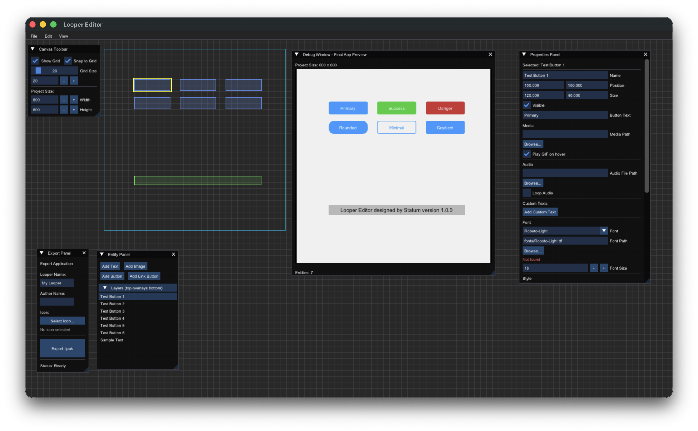
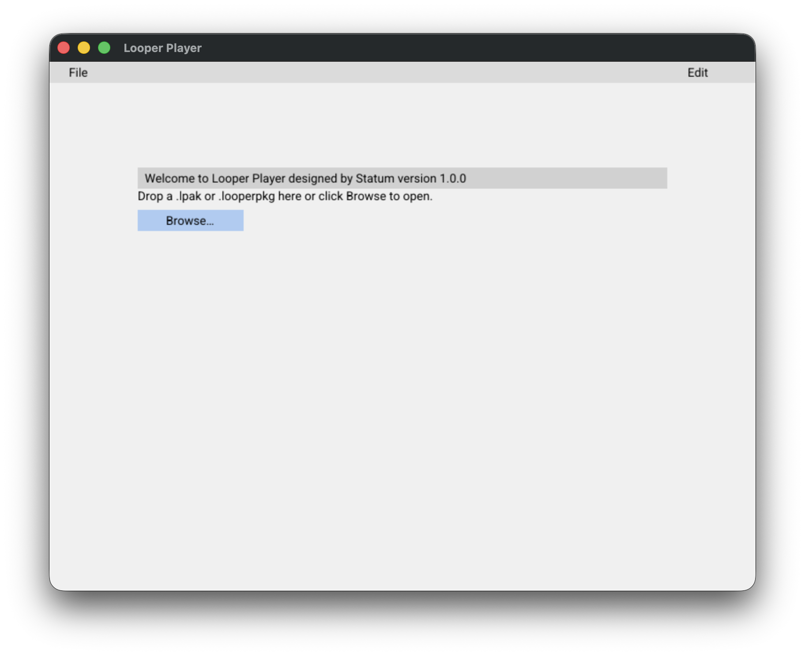
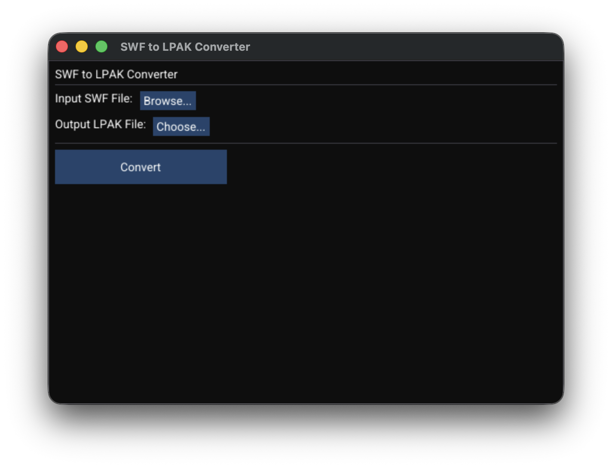

О проекте
Looper Player — это проигрыватель для воспроизведения интерактивных проектов в формате .lpak. Плеер поддерживает все элементы проектов и обеспечивает полную интерактивность.
Основные возможности:
- Воспроизведение проектов в формате
.lpak - Интерактивные элементы: кнопки, ссылки, таблицы, анимации
- Управление аудио: скорость воспроизведения, изменение тональности, громкость
- Режим винилового проигрывателя
- Беспрерывное воспроизведение с поддержкой точек зацикливания
- Высокое качество звука с аппаратным ускорением
Доступные версии:
- Редактор и Плеер - легкие версии для быстрого старта
- Конвертер SWF to LPAK - инструмент для преобразования Flash SWF файлов в формат LPAK
Looper Editor
Мощный редактор для создания интерактивных проектов. Позволяет создавать сложные композиции с анимациями и интерактивными элементами. Поддерживает импорт различных форматов и экспорт в LPAK.

Looper Player
Проигрыватель для воспроизведения интерактивных проектов в формате LPAK. Обеспечивает полную интерактивность, управление аудио, поддержку винилового режима и высокое качество звука с аппаратным ускорением.

SWF to LPAK Converter
Конвертер для преобразования Flash SWF файлов в современный формат LPAK. Позволяет мигрировать старые Flash проекты в новый формат с сохранением всех элементов и интерактивности.

Looper Player
Проигрыватель для воспроизведения интерактивных проектов в формате LPAK. Обеспечивает полную интерактивность, управление аудио, поддержку винилового режима и высокое качество звука.
Looper Editor
Мощный редактор для создания интерактивных проектов. Позволяет создавать сложные композиции с анимациями и интерактивными элементами. Поддерживает импорт различных форматов и экспорт в LPAK.
Конвертер SWF to LPAK
Конвертер для преобразования Flash SWF файлов в формат LPAK
SWF to LPAK Converter
Конвертер для преобразования Flash SWF файлов в современный формат LPAK. Позволяет мигрировать старые Flash проекты в новый формат с сохранением всех элементов и интерактивности.
Полный набор для работы с LPAK
Комплексное решение для создания и воспроизведения интерактивных пакетов. Включает редактор для создания проектов, плеер для их воспроизведения и конвертер для преобразования SWF файлов в формат LPAK. Позволяет создавать полноценные интерактивные приложения с поддержкой анимаций и интерактивных элементов.
Для работы конвертера SWF to LPAK необходимо установить:
brew install swfmill
FAQ: Горячие клавиши редактора
Основные операции
| ⌘Z / Ctrl+Z | Отменить последнее действие |
| ⌘⇧Z / Ctrl+Shift+Z | Повторить отмененное действие |
| ⌘D / Ctrl+D | Дублировать выбранные элементы |
| ⌘⌫ / Ctrl+Delete | Удалить выбранные элементы |
Управление панелями
| ⌘I / Ctrl+I | Свернуть/развернуть все панели |
| ⌘P / Ctrl+P | Свернуть/развернуть активное окно |
Работа с канвасом
| Пробел + Перетаскивание | Перемещение по канвасу (Pan) |
| Колесо мыши | Масштабирование канваса |
| ⌘ + Колесо мыши | Точное масштабирование |
| Клик | Выбрать элемент |
| ⇧ + Клик | Добавить/убрать из выделения |
| Перетаскивание | Переместить выбранные элементы |
Экспорт проектов
При экспорте проекта из редактора в формате .lpak, файлы автоматически сохраняются в папку:
Мои документы → LooperPackages
На macOS это соответствует папке ~/Documents/LooperPackages
Все экспортированные пакеты будут находиться в этой папке для удобного доступа.
Советы
• На macOS используйте ⌘ (Command), на Windows/Linux — Ctrl
• Горячие клавиши работают даже когда фокус в полях ввода
• Используйте ⌘I для быстрого скрытия всех панелей и увеличения рабочего пространства